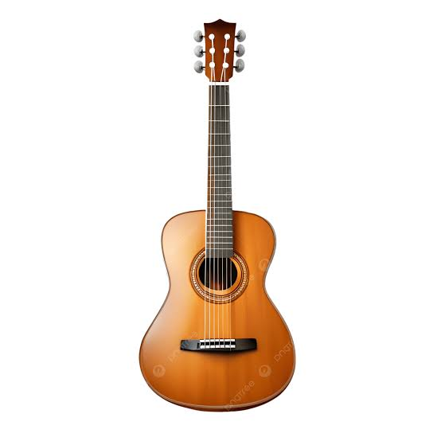
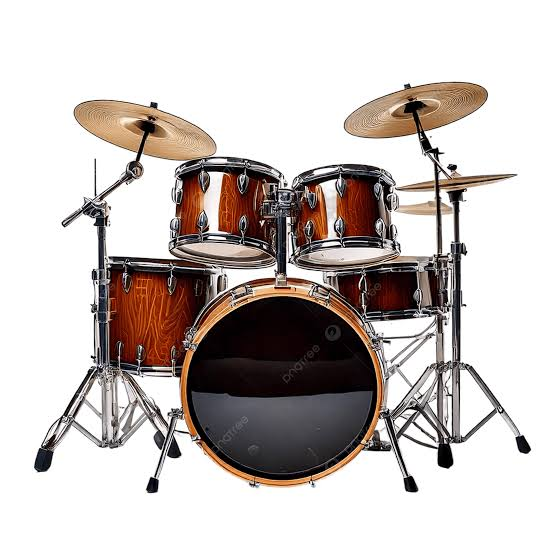
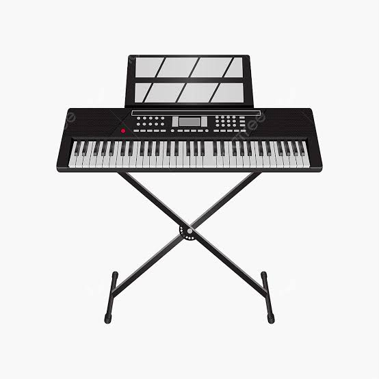
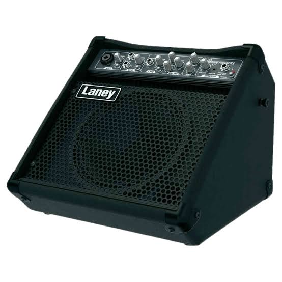
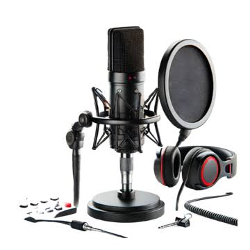

Pasión por la Música en Viña del Mar
Instrumentos, equipos de sonido y taller de reparación especializado. Envíos directos a todo Chile.
Explorar CatálogoNuestros Productos
Explora las principales categorías de instrumentos y equipos disponibles en Sonido Vivo.




